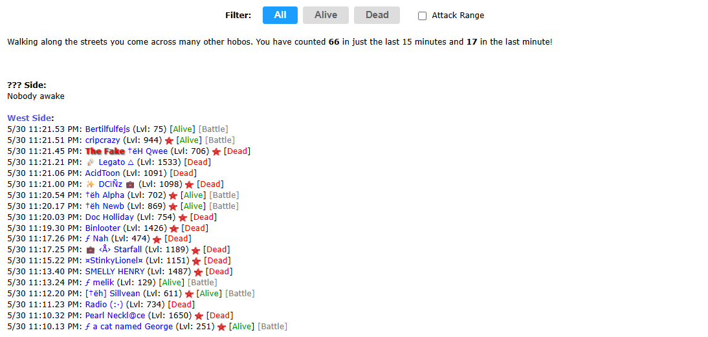

Quickly filter through the Active List to find valid fighting targets.
The Active List often fills up with players who are already dead, making it difficult to hunt for targets. The Active List Helper provides interactive buttons that allow you to instantly hide all dead players with a single click, cleaning up your view.

The Active List showing the Alive/Dead filter buttons.
By default, Hobo Helper automatically restricts the opponent list to players who fall within your immediate attackable level range (± 200 levels). This ensures that you only see targets you can actually engage with!